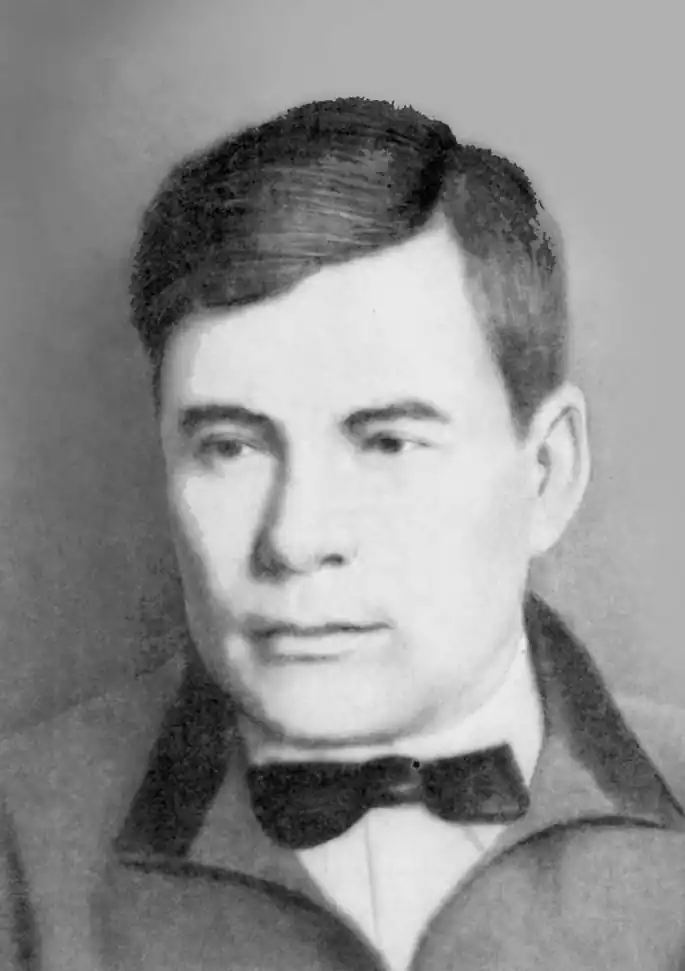

Майк Йогансен (1896-1937)
Йогансен Майк (Михайло) Гервасійович народився 16 (28) жовтня 1895 року в м. Харкові у сім'ї вчителя німецької мови, вихідця з Латвії (в окремих матеріалах є вказівка на його шведське чи норвезьке походження). Навчався Майк у класичній російській гімназії. На час закінчення Харківського університету (1917) він знав старогрецьку й латину, вільно володів англійською, німецькою, італійською, іспанською та французькою, знав скандинавські та слов'янські мови. Як казали сучасники, "з Майка був чортівськи здібний лінгвіст", але так само легко сприймав технічні знання. Майк Йогансен мав енциклопедичну освіту, захоплювався різними видами спорту.
Під враженням від трагічних катаклізмів громадянської війни, передусім кривавих розправ Муравйова та денікінців у Києві, Йогансен "поклав різку лінію у світогляді і пристав до марксівського. Тоді ж почав писати вірші українською мовою — раніше писав руською". Про себе, як українського поета, М. Йогансен заявив 1921 року публікаціями в журналі "Шляхи мистецтва", збірнику "Жовтень". Того ж року вийшла і його перша поетична книга — "Д'горі". Він зближується з В. Елланом, М. Хвильовим, П. Тичиною, В. Сосюрою та іншими харківськими письменниками. Разом з ними пише перші Маніфести "української пролетарської літератури", видає альманахи, засновує першу організацію українських пролетарських письменників "Гарт" (1922). У 1925 р. Йогансен стає одним із засновників ВАПЛІТЕ, згодом — очолює так звану "Групу А", що склалася з літераторів, які відійшли від ВАПЛІТЕ. З його ініціативи з'явився журнал-альманах "Літературний ярмарок", а дещо пізніше — "Універсальний журнал", про який М. Хвильовий з властивим йому сарказмом відгукувався: "Рожденный ползать летать не может". Пізніше Йогансен став членом Спілки радянських письменників України. За сімнадцять років творчої діяльності видав вісім книг віршів, десять книг прози (з них п'ять — книги нарисів), чотири дитячі та дві — літературознавчі. Проте зі всього створеного головним вважав поетичний доробок. На п'ятнадцятому році творчої діяльності видав підсумкову книжку віршів, хоча свою поетичну програму не вважав вичерпаною. На початку творчого шляху молодому поету був властивий мотив мрійних "островів хмар", який О. Білецький називає "запізнілим романтизмом". Проте бурхлива доба швидко "перемагнітила" М. Йогансена. Сповнений сподівань на національне й соціальне оновлення поет видає збірку "Д'горі" (1921), в одному з розділів якої — "Скоро forte" поетичними засобами відтворив епоху революції та громадянської війни, яку бачив у високих героїчних тонах. З великою тривогою придивлявся М. Йогансен до тих непримиренно конфронтаційних тенденцій, які трагічно розколювали народи, втягували їх у вир братовбивчої війни. Звертаючись до фольклорних джерел, М. Йогансен переосмислює їх у світлі ренесансних ідей. (зб. "Кроковеє коло", 1923). Поетична збірка "Ясен" (1929), що з'явилася після книжок "Революція" (1923) та "Доробок" (1924), виявила нову якість творчих пошуків М. Йогансена: від стихійної революційності молодого українського інтелігента раннього періоду творчості письменник еволюціонізує у напрямку "романтика чистого слова". Еволюція поета та його ліричного героя йшла лінією романтизації щоденної, живої, суперечливої дійсності, що по-своєму утверджувала "романтику буднів". Будучи одним із адептів створеної спільно з О. Слісаренком та Ю. Смоличем "Техно-мистецької групи "А", Майк Йогансен, проте, і в поезії, і в прозі зберігав творчу індивідуальність. Часто вдавався до експериментів: поєднував прозу і поезію в одному творі. Полюбляв містифікацію. У післямові до "Подорожі ученого доктора Леонардо" він, перепросивши читачів, пояснює навіщо написано твір: "Ніде не написано, що автор у літературному творі зобов'язався водити живих людей по декоративних пейзажах. Він може спробувати навпаки водити декоративних людей по живих і соковитих краєвидах". Пізньому періодові творчості М.Йогансена властиве звернення до сюжетного вірша, балад, віршованих оповідань, нарису. Він покладає великі надії на прозу, розглядає роботу в поезії як "юнацьку спробу", вважаючи лірику "недовговічною та ефемерною", мріє написати "велике полотно" про "Харків, про індустріальне оновлення" велетенського міста. 18 серпня 1937 року письменника було заарештовано у його харківській квартирі по вулиці Червоних письменників, 5. На допитах Йогансен поводився з властивою йому гідністю: не запобігав перед слідчим Замковим, не "топив" побратимів по перу, не приховував своїх політичних поглядів. "В бесідах з Епіком, Вражливим я говорив, що Остап Вишня — ніякий не терорист, — свідчив він на допиті 16 жовтня 1937 року. — Що саджають людей безвинних у тюрми. Я стверджував, що арешти українських письменників є результатом розгубленості й безсилля керівників партії і Радянської влади". 24 жовтня 1937 р. Йогансену було пред'явлено обвинувачувальний висновок, підготований оперуповноваженим харківського УНКВС Половецьким і затверджений заступником начальника управління Рейхманалом, в якому зазначалося, що Йогансен з 1932 р. був учасником антирадянської націоналістичної організації, яка ставила своєю метою повалення Радянської влади методами терору й збройного повстання, завербував чотири особи для участі в повстанні, погодився особисто взяти участь у виконанні теракції проти керівників компартії і радянського уряду. Розглянувши на закритому засіданні 26 жовтня 1937 року судово-слідчу справу М. Йогансена, Військова Колегія Верховного Суду СРСР винесла вирок: "Йогансена М.Г. засудити до вищої міри кримінального покарання — розстрілу з конфіскацією всього майна, що належить йому особисто. Вирок остаточний і на підставі Постанови ЦВК СРСР від 4 грудня 1934 року підлягає негайному виконанню". 27 жовтня 1937 року Йогансена було розстріляно у Києві. Твори: Поезії (К., 1989).